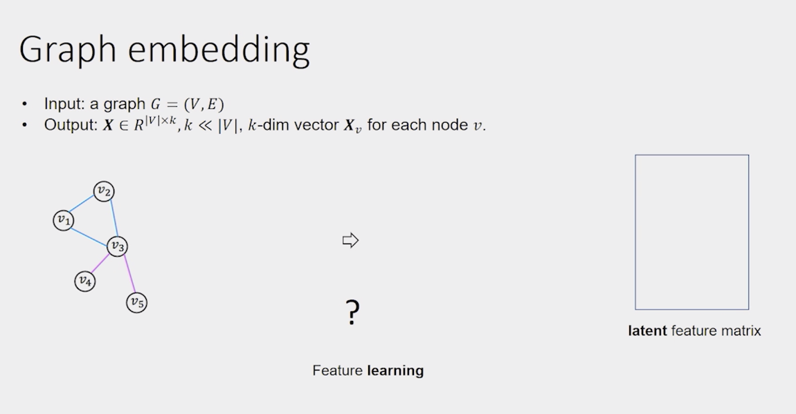
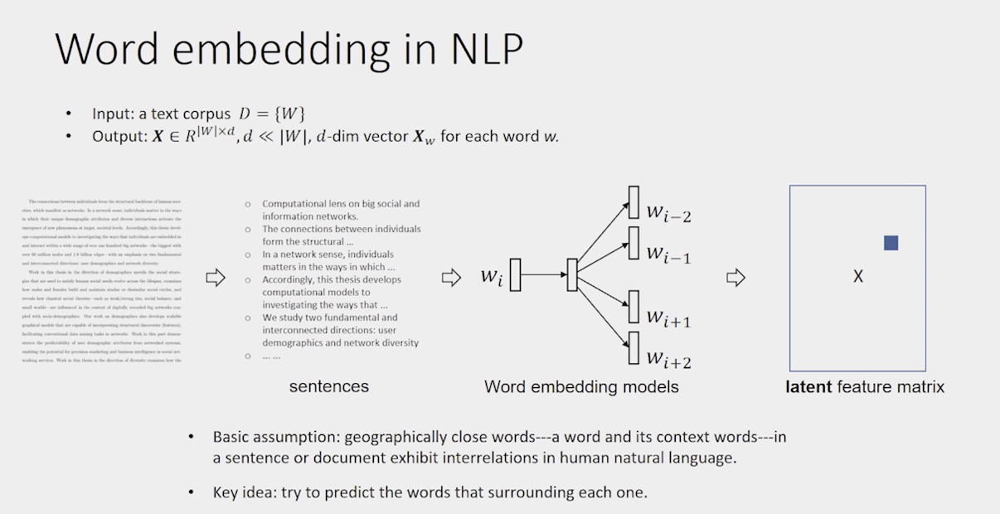
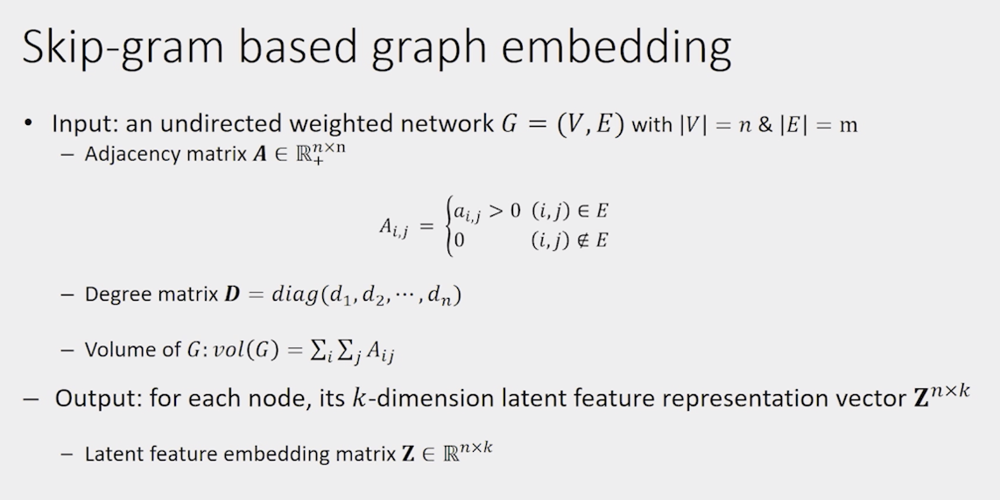

Part3. Graph Representation Learning
Problem: structural feature engineering over the graph is expensive.
=> Graph Representation Learning aimed to learn latent(潜在的) feature matrix
Representation learning for graph mining?
The goal is to map each node into a latent low-dimensional space such that network structure information is encoded into distributional node representations.
1. Skip-gram based graph embedding

skip-gram based word embedding

The queston becomes: how to transform the graph into a word document?
Or, how to transform the nonlinear graph structure into linear structures?
Consider sentence as a node path, each node representing a word.

Two steps:
- random walks over graph to generate node path.
- skip gram model to apply to node path generated in the first step.
Skip gram with negative sampling
- For sufficiently large dimension d, the objective of SGNS(Skip-gram with negative sampling) is equivalent to factorizing the PMI matrix(Pointwise mutual information matrix).
2. Heterogeneous graph embedding
3. Graph convolutional network
Ref: From Graph to Knowledge Graph – Algorithms and Applications